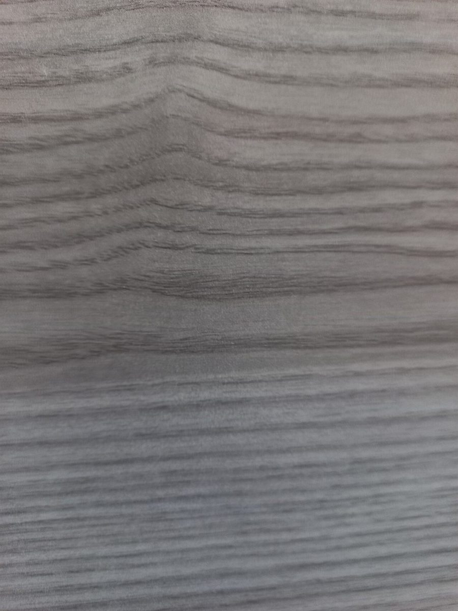

乙 / 店のこと
店のこと
お店について確認できているのは、所在地・電話番号・Instagramのアカウントです。
「想像してみる」部分は制作側が想像して書いたもので、お店の実際の様子・考え・メニューとは関係がありません。
確認できていること
- 店名は「つちのと」、業種はカフェ
- 所在地は三重県松阪市中央町３６−５(〒515-0019)
- 電話番号は0598-67-6029
- Instagramは @tsuchinoto1
- 営業時間・定休日・メニュー・価格・ご予約・駐車場は準備中

想像してみる
「つちのと」という音から
由来は分かりません。制作側は、「つち」の響きから、素朴な手ざわりのものを思い浮かべました。たとえば木のテーブル、土を焼いた器、古びた板の木目。そんなものに囲まれたカフェかもしれない、というのはあくまで想像です(実際のお店の姿ではありません)。
